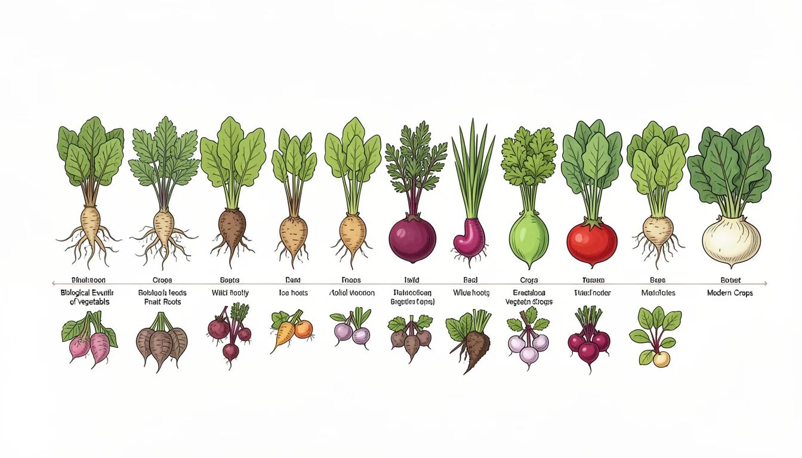

Bir domates, bir elma ya da bir broçoli; bu sıradan görünen gıdaların arkasında 130 milyon yıllık evrimsel bir hikâye yatar. Dar koridorlardan süper marketlere, orman ata eşlerinden hibrit soylarına uzanan bu yolculuk; bitki biyolojisi, insan uygarlığı ve kıtasal göçlerin kesişim noktasında şekillendi.
Angiospermlerin Doğuşu: Her şeyin Başlangıcı
Sebze ve meyvelerin evrimi, çiçekli bitkiler anlamına gelen angiospermlerin ortaya çıkışıyla başlar. Kretase Dönemi’nde (yaklaşık 130 milyon yıl önce) sahne alan angiospermlerin en erken fosil kanıtları Çin’in Liaoning eyaletinde bulunmuştur (Nature, 2002). Bu bitkiler; tohumlarını kapalı bir yumurtalık içinde taşımaları sayesinde, açık tohumlu gym ospermlerden çok daha hızlı çeşitlenebildi.
Angiospermler, dinozorların hâlâ gürültüyle dolaştığı bir dünyada meyve oluşturdu. Meyve, aslında bitkinin tohumu dağıtma stratejisidir: etişli ve tatlı bir yapı oluşturarak hayvanları çeker, onların meyveyi yemesini ve tohumu farklı bir noktaya taşımasını sağlar. Bu evrimsel muhtemeşam ortaklık, hem bitkilerin hem de meyve yiyen canlıların yararlandığı bir sistem yarattı.
Evrimsel Merkezler: Sabanın İz Bırakttığı Coğrafyalar
Rus botanikçi Nikolay Vavilov, 1920’li ve 1930’lu yıllarda dünyanın dört bir yanında saha araştırmaları yaparak kültür bitkilerinin köken merkezlerini haritaladı. Bugün “Vavilov Merkezleri” olarak bilinen bu coğrafyalar, modern tarımın biyolojik mirasının kaynağıdır (Vavilov, 1926; Studies on the Origin of Cultivated Plants):
1. Akdeniz Merkezi: Marul, kereviz, enginar, pırasa, soğan ve sarımsak bu bölgeden dünyaya yayıldı. MÖ 5.000’lere dayanan Fenike ve Mısır uygarlıklarının tarım kayıtları bu sebzeleri belgeler. Arpa ve buğdayın da kültüre alındığı bu bölge; ılık, kurak yaz ve yağışlı kış iklimi sayesinde sebze evrimi için ideal bir laboratuvar işlevi gördü.
2. Orta Doğu ve Bereketli Hilal: Mercimek, nohut, bezelye, bakıa ve ilk tahılların anavatanıdır. MÖ 10.000’e uzanan Neolitik tarım devriminin kalbi burasıdır. Doğu Akdeniz ve Mezopotamya’da ıslah edilen bu baklagiller, insan beslenme tarihinin en kıymetli bileşenlerinden olmuştur (Diamond, 1997; Guns, Germs and Steel).
3. Güney ve Doğu Asya: Pişmiş mutfak kültürünün ana malzemeleri olan patlıcan, bambu filizi, Çin lahanası, salata turpu (daikon) ve bir çok narenciye türü bu merkezden dünyaya yayıldı. Hint Yarımadası’nda zerdedal, biber ve köknar gibi baharat bitkileri de evcilleştirildi.
4. Meksika ve Orta Amerika: Domates, mısır, patates, kabak, avuçiçi, vanilya, kakao ve kırmızı biber bu bölgenin insanlığa armağanıdır. Aztek ve Maya uygarlıkları, bu bitkileri binlerce yıl boyunca ıslah etti. Domates’in atası olan Solanum pimpinellifolium, Peru ve Ekvador kıyılarına özgüdür; fakat kültüre alınması Meksika’da gerçekleşti (Blanca ve diğerleri, 2012; PLOS ONE).
5. And Bölgesi (Güney Amerika): Patates’in anavatanı Peru’dur. Bugün dünyada 5.000’den fazla patates çeşidi bulunmakla birlikte bunların büyük çoğunluğu And Dağları’nda yaşayan yerel halklar tarafından yüzyıllar içinde geliştirilmiştir. Quinoa, acı biber (ají), oca ve yacon da bu bölgeden çıkan önemli bitkilerdir (Spooner ve diğerleri, 2005; PNAS).
Çiçekli Bitkilerden Tabağa: Evcilleştirme Süreci
Evcilleştirme, bitkinin do&doğal seçilim yerine yapay seçilimle şekillendirilmesi sürecidir. İnsan elleri, on binlerce yıl boyunca şu özellikleri aradı: daha büyük meyve/tohum, daha az acılık veya toksinlik, çekirdeksizlik, ince kabuk ve uzun raf ömrü. Ata domatesi olan yabani türden bugünkü çeşide giden yolda meyve ağırlığı yaklaşık 1.000 kat arttı. Mısırın ilk ata bitkisi olan teosinte’den modern mısıra uzanan süreç, yaklaşık 9.000 yıl sürdü (Beadle, 1939; Genetics).
Evcilleştirmenin bir bedeli de vardır: genetik çeşitlilik kaybı. Tek tip ticari çeşitlere olan bağımlılık, bitkileri hastalık ve iklim değişikliğine karşı kırılgan kılmaktadır. 1845-1849 yılları arasında İrlanda’yı kasıp kavuran büyük kıtlık, tek bir patates çeşidine olan aşırı bağımlılığın trajedisidir; Phytophthora infestans mantarı bu tek hatı ortadan kaldırdığında, bir milyon insan açlıktan hayatını kaybetti (Donnelly, 2001; The Great Irish Famine).
Keşifler Çağı ve Küresel Yayılım
15. ve 16. yüzyıllardaki büyük coğrafi keşifler, bitki türlerinin kıtalar arasında geçişini hızlandırdı. Bu süreç “Kolomb Değişimi” (Columbian Exchange) olarak adlandırılır (Crosby, 1972; The Columbian Exchange). Amerikan kıtasından Avrupa, Asya ve Afrika’ya geçen bitkiler şunlardır: patates, domates, mısır, kakao, tütün, kabak, fasulye türleri, kırmızı biber ve ananas. Bu bitkiler, özellikle patates ve mısır, Avrupa nüfusunun patlamasına katkıda bulundu; tahmin edilene göre bugün insanlığın günlük kalori alımının yüzde otuz beşi Amerikan kökenli bitkilerden gelmektedir (Mann, 2011; 1493).
Ters yönde de önemli alışverişler yaşandı: Portakaller, limon, mango, pirinç, şeker kamışı, buğday ve kahve Eski Dünya’dan Amerika’ya taşındı. Hindistan’dan uzak Asya’ya uzanan baharat yolları ile Arap tüccarlarının Doğu Afrika güzergâhları, bitkilerin evcilleştirilmesinden asırlarca önce de kıtalar arası taşınmasını sağlıyordu.
Bölgesel Gelişim Odakları ve Özgün Çeşitler
Akdeniz Havzası: Zeytinin (Olea europaea) ilk kültüre alınması MÖ 6.000 yıllarına tarihlenmektedir. Bugün dünyada üretilen zeytinin yaklaşık yüzde seksen biri Akdeniz havzasında yetiştirilmektedir (FAO, 2022). Enginar, İspanya’dan gelen bir tür olan Cynara scolymus’un ıslah edilmiş hâlidir; kültüre alınması ise Kuzey Afrika ve Sicilya’da gerçekleşmiştir.
Çin ve Doğu Asya: Şeftali (Prunus persica), Çin’e özgü bir türdür; arkeolojik kanıtlar Yangtze Nehri havzasında MÖ 7.500’e kadar uzanmaktadır (Zheng ve diğerleri, 2014; PLOS ONE). Japon yemek kültürünün temel malzemeleri olan bambu filizleri ve wasabi ise Japonya’nın dağlık ve nemli habitatlarında şekillendi. Çay bitkisi (Camellia sinensis) de güneybatı Çin’den dünyaya açıldı.
Orta Asya Stepi: Elmanın (Malus domestica) anavatanı Kazakistan’ın Tian Şan dağ silsilesindeki yabani Malus sieversii ormanlarıdır; genetik çalışmalar bu kökenin doğruluğunu kesin biçimde ortaya koymuştur (Velasco ve diğerleri, 2010; Nature Genetics). Bugün dünyada 7.500’den fazla elma çeşidi bulunmakta olup hepsi bu ata türden türemiştir. Üzüm (Vitis vinifera) ise Kafkasya ve Yakın Doğu’da evcilleştirilmiştir.
Sahra Altı Afrika: Kavun, karpuz ve bamya bu bölgeden çıkmıştır. Karpuzun (Citrullus lanatus) en erken kültüre alınma kanıtları MÖ 4.000’e tarihlenen Mısır kalıntılarında bulunmuştur. Tohta tarımı ile geçimini sağlayan Orta Afrika toplulukları ise yüzyıllar içinde manyok, taro ve tatlı patatesi kültüre aldı.
Günümüzde Sebze ve Meyve Biyolojisi: Gen Devrimi
20. yüzyılın ikinci yarısında başlayan Yeşil Devrim ve ardından gelen gen mühendisliği çalışmaları, evcilleştirme sürecini radikal biçimde hızlandırdı. CRISPR-Cas9 teknolojisi ile domates’te raf ömrü uzatılmakta, buğdayda glüten miktarı ayarlanmakta, muzda ise Panama hastalığına (Fusarium oxysporum) karşı direnç kazandırılmaya çalışılmaktadır (Nekrasov ve diğerleri, 2017; Nature Plants).
Bununla birlikte tohumun genetik çeşitliliğini koruma çalışmaları da ivme kazandı. Norveç’teki Svalbard Küresel Tohum Kasası, bugün itibarıyla 1,3 milyonun üzerinde tohum örneğine ev sahipliği yapmaktadır. Bu kasanın amacı, iklim felaketi, savaş ya da toplu hastalık gibi bir krizde insanlığın gıda kaynağını güvence altına almaktır.
“Bir meyveyi anlamak için onu yetiştiren toprağı, onu şekillendiren iklimi ve onu yeyen medeniyeti anlamak gerekir.” — Michael Pollan, The Botany of Desire, 2001
Sonuç: Tabağımızdaki Evrim
Bugün markette sıradan bir domates aldığınızda, Andes’lerin yabani topraklarından yola çıkan, Maya bahçeleri ve İspanyol gemileri aracılığıyla dünyayı dolaşan, İtalyan mutfağında tapınak statüsüne yükselen evrimsel bir yolculuğun ürününü tutuyorsunuz. Sebze ve meyveler; yalnızca beslenme kaynağı değil, insan uygarlığının biyolojik belleğidir.
Bu büyük tabloyu daha iyi anlamak için faydalı ve zararlı özellikleri ile dünyanın dört bir yanındaki dağılımlarıyla sebzeler ve meyveler hakkında hazırladığımız derinlemesine yazılarımızı okuyabilirsiniz.